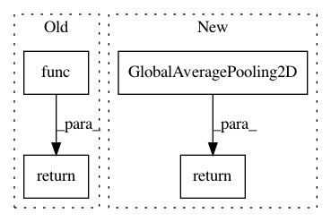

4b83c1070cebd0d996ba2cc69779dcb66d5d0032,autokeras/layers.py,,to_real_layer,#Any#,203
Before Change
if is_layer(layer, "Flatten"):
return Flatten()
if is_layer(layer, "GlobalAveragePooling"):
return layer.func()
def to_stub_layer(layer, input_id, output_id):
if is_conv_layer(layer):
After Change
if is_layer(layer, "Flatten"):
return Flatten()
if is_layer(layer, "GlobalAveragePooling"):
return GlobalAveragePooling2D()
def to_stub_layer(layer, input_id, output_id):
if is_conv_layer(layer):
In pattern: SUPERPATTERN
Frequency: 4
Non-data size: 4
Instances
Project Name: jhfjhfj1/autokeras
Commit Name: 4b83c1070cebd0d996ba2cc69779dcb66d5d0032
Time: 2018-05-29
Author: jhfjhfj1@gmail.com
File Name: autokeras/layers.py
Class Name:
Method Name: to_real_layer
Project Name: keras-team/autokeras
Commit Name: 7f30b2403fadc4eaad48ceaf6154a626f477f8c8
Time: 2018-05-26
Author: jin@tamu.edu
File Name: autokeras/layers.py
Class Name:
Method Name: to_real_layer